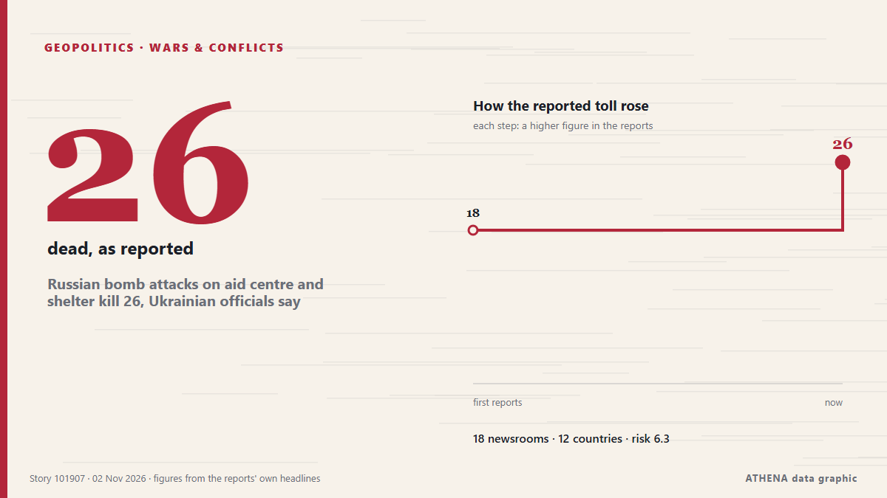

Geopolitik, Politik und Sicherheit
GesponsertPräsentiert von  Cybernetics and Artificial Intelligence Lab Welcome to the Cybernetics and Artificial Intelligence Laboratory, established at the Department of Business Administration of the National
Cybernetics and Artificial Intelligence Lab Welcome to the Cybernetics and Artificial Intelligence Laboratory, established at the Department of Business Administration of the National
Schlagzeilen werden auf Englisch angezeigt, wie veröffentlicht.

Kriege und KonflikteRussian bomb attacks on aid centre and shelter kill 26, Ukrainian officials say
Ukrainian President Volodymyr Zelensky said it ‘is further proof that Russia wants no de-escalation’. von The Irish News (Belfast)
| 21. Okt. | 165 |
|---|---|
| 22. Okt. | 271 |
| 23. Okt. | 251 |
| 24. Okt. | 175 |
| 25. Okt. | 179 |
| 26. Okt. | 318 |
| 27. Okt. | 278 |
| 28. Okt. | 236 |
| 29. Okt. | 245 |
| 30. Okt. | 285 |
| 31. Okt. | 151 |
| 1. Nov. | 186 |
| 2. Nov. | 199 |
| 3. Nov. | 2 |
Israel elections: More Arab votes, same Zionist consensus
Israelis head to the polls on October 27 in a vote that will cast Prime Minister Benjamin Netanyahu and his right-wing and religious allies against a motley crew of opposition parties. von Responsible Statecraft
26 Dead, 27 Missing as Russia Strikes Aid Site in Komyshuvakha, Zaporizhzhia Region
A school in Komyshuvakha, Zaporizhzhia region, used for weekly humanitarian aid distribution and its shelter were struck with at least nine Russian guided aerial bombs (KABs) on Monday, Nov. von Kyiv Post
Russia arrests minor after US Embassy warns of ‘credible threat of a mass casualty event’ in Moscow
Russia’s Federal Security Service says detainee posted TikTok videos showing object resembling weapon at Moscow museum-reserve. von Anadolu Agency (English)
Netanyahu Pressing Trump To Attack Iran After Midterms: Report
Democratic doctors aim to convert the backlash against the Trump administration’s health policies into midterm votes. von Al Jazeera English
UN peacekeeping mission in Western Sahara ends after 35 years
Morocco, which claims the Western Sahara as its own, welcomed the decision, while its opponents in the Algeria-backed Polisario Front expressed concern. von Free Malaysia Today
UK PM Burnham says he is ‘open’ to formal apology for slavery, but rules out reparations
At least 12.5 million Africans were abducted and sold into slavery. von Express Tribune
Democrats, Trump hold final rallies before midterm elections
Polls show Democrats are near certain to take the majority in the House of Representatives and have a real shot at winning the Republican-held Senate. von Free Malaysia Today
Iran Designates MI6 as ‘Hostile Group,’ Declares UK Royal Navy and RAF ‘Terrorist Organizations’
The Iranian Foreign Ministry announced the measures on Sunday, citing Britain’s participation in the US-Israeli war against Iran and its decision to place the Islamic Revolution Guards Corps (IRGC)… von Aravot (English)
Israeli strikes kill three people in Gaza, medics say
Israeli strikes killed at least three Palestinians and wounded several others in the Gaza Strip on Monday, the territory’s health officials said. von Cyprus Mail
Michigan Democrat's endorsement of Republican ruffles critical Senate race
A prominent Michigan Democrat endorsed Republican Mike Rogers on Sunday, giving President Donald Trump's Republicans an unexpected boost in a critical US Senate race two days before midterm elections… von France 24 English
Kremlin responds to Tokayev's proposal for Russia to join Organization of Turkic States
Oleshky ceasefire expires, Ukraine evacuates civilians from parts of Kherson region
Nov 1 - Ukraine's military said it evacuated 167 people from threatened areas of southern Kherson region on Sunday as a temporary local ceasefire expired — two days after buses carried residents out… von The Straits Times
Belgian government crisis looms as budget talks collapse
Belgian Prime Minister Bart De Wever was set to hand in his resignation on Monday, following late-night coalition talks that failed to reach a compromise on budget cuts, Belgian media reported. von Cyprus Mail
Hebron governor says Israeli forces withdraw from city after 10-day siege
Hebron Mayor Youssef al-Jaabari says families forced from their homes can return and students can go to school. von Al Jazeera English
China's foreign minister pushes for dialogue to resolve Middle East conflict
BEIJING, Nov 2 (Reuters) - China's Foreign Minister WangYi said on Monday that all parties in the Middle East conflict should focus on political solutions rather than resorting to arms again, in a… von Al-Monitor
US delivery of 500 Patriot missiles to Ukraine will span 3 years starting in 2030
NATO Supreme Allied Commander Europe General Alexus Grynkewich said the United States continues to supply Ukraine with Patriot interceptor missiles, as well as weapons packages paid for by European… von Ukrinform (English)
Brazil’s Lula to attend COP31 climate summit in Türkiye
Our experts unpack what Lula’s victory means for Brazil’s ties with Washington and how it could reshape a region trending right. von Atlantic Council
Iranians Have Left Doha Talks, Draft Proposal for US Deal Being Circulated, Official Says
Nov 2 (Reuters) - Iranian negotiators have left talks with Qatari mediators aimed at ending the war with the United States, and a draft proposal is being circulated with a follow-up meeting possible… von Al-Monitor
Zelenskyy: Ukraine will halt strikes on Russian refineries if US provides interceptors
President Volodymyr Zelenskyy has informed US media that Ukraine will stop targeting Russian oil refineries in exchange for Patriot interceptor missiles or halted Russian attacks. von Ukrainska Pravda (English)
Presidential runoff Iotova Wins over 85% of Votes in Bulgaria's Presidential Runoff in Moldova
Bulgarians voted Sunday in a presidential runoff between two candidates with opposing views on the Ukraine war and relations with Russia as tensions mount in the Black Sea. von France 24 English
Presidential Runoff Turnout Stands at 19.33% as of 16:00
Voter turnout in Bulgaria’s presidential and vice-presidential election stood at 2.4% as of 9:00 a.m.... von Novinite
Saudi civil defence sounds all-clear after alerts in southern cities
Nov 2 - Saudi Arabia's civil defence authority on Monday said the threat had passed shortly after issuing alerts for the southern and western cities of Khamis Mushait, Abha, Taif and Najran, amid… von The Straits Times
Trump questioned about new Iran strikes: ‘Would I tell you?’
Expectations are growing that the US President will order new strikes against Iran as soon as this week. von Sydney Morning Herald
Coalition Destroys 5 Houthi Ballistic Missiles, 4 Drones Fired at Saudi Arabia
Riyadh: Saudi forces on Tuesday intercepted a ballistic missile aimed at the kingdom's capital, said a spokesman for the Riyadh-led coalition backing Yemen's government, after auth... von Oman Observer
Erdogan, Zelensky talk Black Sea Grain Corridor
Turkish President Recep Tayyip Erdogan and Ukrainian President Volodymyr Zelensky agreed on Saturday to continue work on the Black Sea Grain Corridor, aimed at enabling grain shipments from Ukraine. von AzerNews
Trump says Iran war will end ‘very soon, one way or the other’
President Trump expressed optimism that the conflict with Iran would end soon, though he didn’t provide specific details on how this would occur. von Arab News
Haley Stevens endorses GOP candidate in Michigan Senate race, spurning Abdul El-Sayed
Rep. Haley Stevens was scheduled to attend a unity event today with Abdul El-Sayed, who beat her in the Democratic primary. von NPR
Trump administration bolsters bid to block Alaska Senate certification
President Donald Trump’s administration filed a revised lawsuit on Thursday seeking to block Alaska’s election results if Republican incumbent Dan Sullivan loses narrowly and issued more than 40… von FBC News
Ukraine claims strike on major Russian oil refinery near Moscow
Russia reports significant damage to an industrial facility in the Nizhny Novgorod region after a massive overnight drone attack, as Kiev claims it targeted the Kstovo oil refinery. von TRT World
Thousands protest in India's capital against voter roll revision
NEW DELHI: Thousands joined a protest led by opposition politicians in India’s capital on Sunday, renewing demands for the country’s election chief to resign over an overhaul of voter lists they say… von New Straits Times
Indian authorities tighten security ahead of big opposition march in Delhi
Protesters are set to demand the resignation of India's election chief over a controversial revision of voter lists. von CNA (Channel NewsAsia)
Iran warns US, Israel against new attacks after Trump, Netanyahu threats
TEHERAN: Iran’s supreme leader warned the United States and Israel Saturday of fresh attacks following their threats to resume strikes after crucial elections, as fears increased over a return to… von New Straits Times
G20 FM meeting ends without joint communique amid deep divisions
Foreign ministers from the Group of 20 leading economies are gathering in Atlanta on October 30-31 for talks expected to expose continuing divisions among Western governments over Russia's war in… von RFE/RL (English)
Evacuees from Russian-occupied Oleshky reunited with relatives in Ukraine
Russia and Ukraine have not specified how many people chose to leave the city. von The Irish News (Belfast)